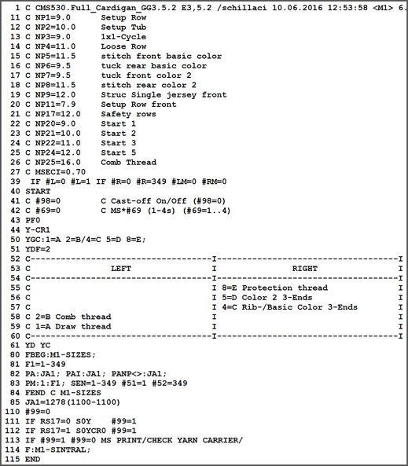

Sintral
- Sintral is a machine language developed by Stoll.
- The text-based file contains all the relevant knitting specifications as function.

I. Structure:
|
Program structure |
|
|
40 START |
|
|
II. Knitting instructions:
|
Sintral command | Meaning |
|---|---|
<< | Carriage direction to the left |
>> | Carriage direction to the right |
<> | any carriage direction |
S: ...-...; | Knitting specification |
*+.ABEGHIKLMOPQTWYZ | Jacquard symbols for single needle selection |
N | Symbols written after N are not selected, but all other symbols Example: S: A - NA ; |
%. | Symbols written after the % move needles to the tuck position, Example: S: A%Y – 0; |
0 | All needle do not knit |
- | Break between front and rear system |
/ | Break between the systems |
; | End of a knitting specification |
<1-> | Decrease Jacquard |
<A> | Releases the Jacquard selection in the color field A |
Y:...; | Yarn Carriers |
S1 .... S6 | Knitting system 1 to knitting system 6 |
U^S | Transfer to rear |
UVS | Transfer to Front |
UXS | Transfer to the rear and to the front |
MCWSn-m | Carriage path from needle n to m |
RS | Cycle Counters |
FBEG | Beginning of the function |
FEND | Function end |
SBEG | Start of stroke processing. |
SEND | End of stroke processing. |
JA1 .....8 | Jacquard1 .... 8 |
# | Counters |
IF | IF-decisions |
IFN | If not... |